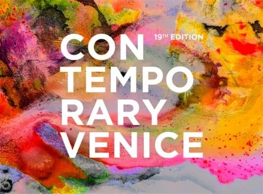

da ven 16 ott a ven 30 ott
CONTEMPORARY VENICE - 19ª EDIZIONE 2026
ITSLIQUID Group è lieta di annunciare l'apertura della 19ª edizione di CONTEMPORARY VENICE, mostra d'arte internazionale che si terrà dal 16 al 30 ottobre 2026, in concomitanza con la 61ª Biennale d'Arte di Venezia. Ospitata all'interno del cinquecentesco Palazzo…
 Indicazioni
Indicazioni
- Costi e prenotazioni
- Costo non indicato · Prenotazione non indicata
- Programma
- Programma da verificare. Apri la fonte ufficiale per orari e possibili aggiornamenti.
- In caso di maltempo
- Nessuna indicazione specifica pubblicata.
- Note
- Acquisito automaticamente dalla fonte.
L’EVENTO
Descrizione completa
CONTEMPORARY VENICE - 19ª EDIZIONE 2026
Palazzo Albrizzi-Capello, Venezia
ITSLIQUID Group è lieta di annunciare l'apertura della 19ª edizione di CONTEMPORARY VENICE, mostra d'arte internazionale che si terrà dal 16 al 30 ottobre 2026, in concomitanza con la 61ª Biennale d'Arte di Venezia. Ospitata all'interno del cinquecentesco Palazzo Albrizzi-Capello, l'esposizione riunisce una selezione di artisti da tutto il mondo che operano tra pittura, fotografia, video arte, scultura, installazione e performance dal vivo.
CONTEMPORARY VENICE esplora l'evoluzione del rapporto tra il corpo e gli spazi che abitiamo, riflettendo su come le identità si formino, si trasformino e si ibridino negli ambienti culturali, fisici, sociali e urbani contemporanei. La mostra si articola in due sezioni: MIXING IDENTITIES, che indaga le dimensioni interiori dell'identità e il corpo come sistema relazionale, e FUTURE LANDSCAPES, dove i confini si dissolvono e lo spazio diventa un campo aperto di idee e possibilità.
L'idea di un sé ibrido e in continuo divenire prende forma in opere che sfumano i confini tra le forme: in questo senso, Bardia Mehdinejad presenta "Bluebird", un collage in cui un uccello dal piumaggio blu e un rinoceronte emergono da un fondo viola, componendo una creatura onirica che sfugge a ogni definizione univoca. Questa tensione tra occultamento e presenza anima anche "Untouchable skies" di Antonella Camisassi, dove due figure velate si rivolgono l'una verso l'altra: i volti sono celati, eppure il gesto di vicinanza rende il loro legame inequivocabile, e il tessuto che le avvolge diventa al tempo stesso barriera e forma di protezione. Dalla relazione tra i corpi lo sguardo si sposta al corpo come materia nel "Busto" di Leonardo Glauso, la cui superficie, attraversata da vibranti pennellate di rosso e blu, si legge come un territorio stratificato di memoria ed emozione, un movimento che raggiunge la sua profondità in "Weigh of excistence" di Pati Avakian, dove un volto vigile affiora da una superficie fortemente materica, quasi geologica, come se gli strati nascosti della coscienza fossero stati portati alla luce.
L'identità, tuttavia, non si costruisce mai in isolamento, e la mostra guarda anche agli incontri e agli spazi condivisi che la plasmano. Terje Kjølseth coglie in "Serious Talk" lo scambio silenzioso tra due donne anziane sedute su una panchina, un legame sostenuto dal tempo e racchiuso in un'unica immagine in bianco e nero. Su un registro molto diverso, Rui Carruco sospende un luminoso frammento d'infanzia sulla riva in "Between sand and light", dove figure, sabbia e luce si fondono in un ricordo in movimento. Vheneka Roy Dakarayi Magazi chiude questa prima parte del percorso con "Ultraviolet", un intenso campo rosso da cui un copricapo decorato compare al margine dell'inquadratura, giocando su presenza e occultamento e sui segni culturali attraverso cui l'identità si esprime e viene percepita.
Il percorso si apre poi sul tema Future Landscapes, dove lo spazio diventa fluido e, a guidare, è l'immaginazione: nella video opera "The Fractals: los improbables", Yolanda Spínola-Elías immagina un habitat popolato da creature che evocano oceani sconosciuti e storie evolutive alternative. I loro molteplici occhi sembrano restituire lo sguardo, attirando lo spettatore in un incontro sospeso tra riconoscimento e estraneità, e chiedendoci come estendere attenzione e cura oltre la somiglianza.
Il paesaggio continua poi a dissolversi e ad espandersi. Aldo Luigi Gaddi trasforma la laguna veneziana in una visione senza confini in "Laguna di Venezia Circolare", piegando mare e cielo l'uno nell'altro fino a far svanire orizzonte e prospettiva. Questa dissoluzione prosegue in "Oto II" di Kingsley Gunatillake, dove il paesaggio si riduce a pura atmosfera, un campo sfumato di giallo e arancione che invita a un viaggio attraverso la sensazione più che attraverso il luogo.
In "Bleu Echo", Beatrice de Diego lascia che l'inchiostro blu si diffonda e risuoni sulla carta come un'eco, trasformando il gesto in uno spazio in espansione, e Mary More completa l'itinerario con "Puzzle", un intreccio di segni e frammenti blu che si cercano e si ricompongono in un paesaggio di pensiero in continua trasformazione.
CONTEMPORARY VENICE 2026 offre un percorso coeso attraverso le pratiche visive contemporanee, ulteriormente arricchito da un'ampia selezione di video artworks.
Associazione Culturale Italo-Tedesca (ACIT), Cannaregio 4118, Venice
Lunedì - Venerdì | 09:30 - 17:30
Supported by FUNDAȚIA UMANITARĂ ASSIST
IL PROGRAMMA
Programma e orari
Appuntamenti raccolti dalle fonti elencate. Dove manca un orario, non è ancora disponibile in questa scheda.
Programma pubblicato
- Dal 2026-10-16 al 2026-10-30
INFORMAZIONI UTILI
Prima di partire
- Controllare la fonte prima di partire.
ORGANIZZAZIONE